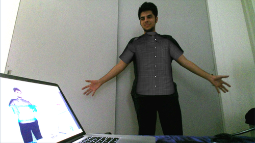
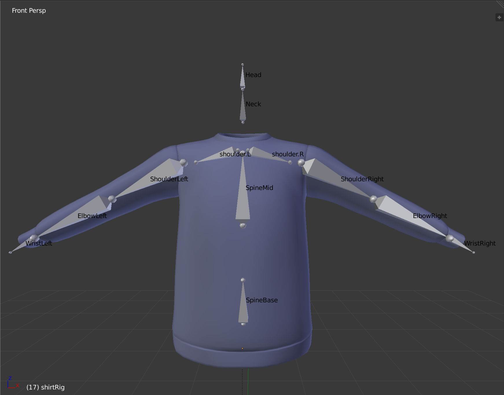
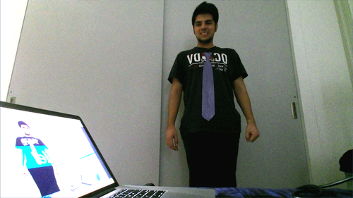
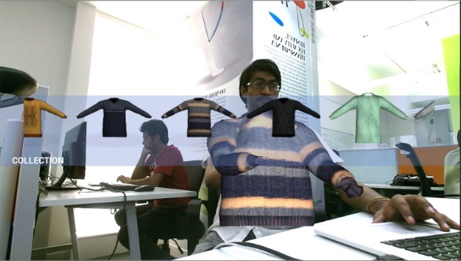
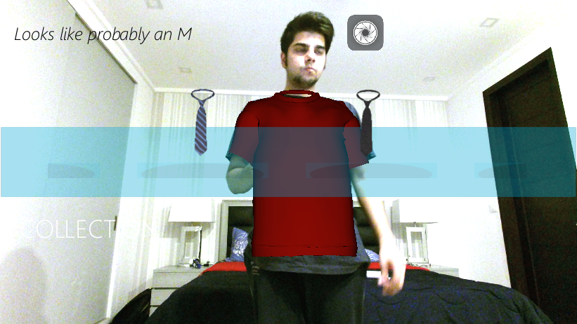
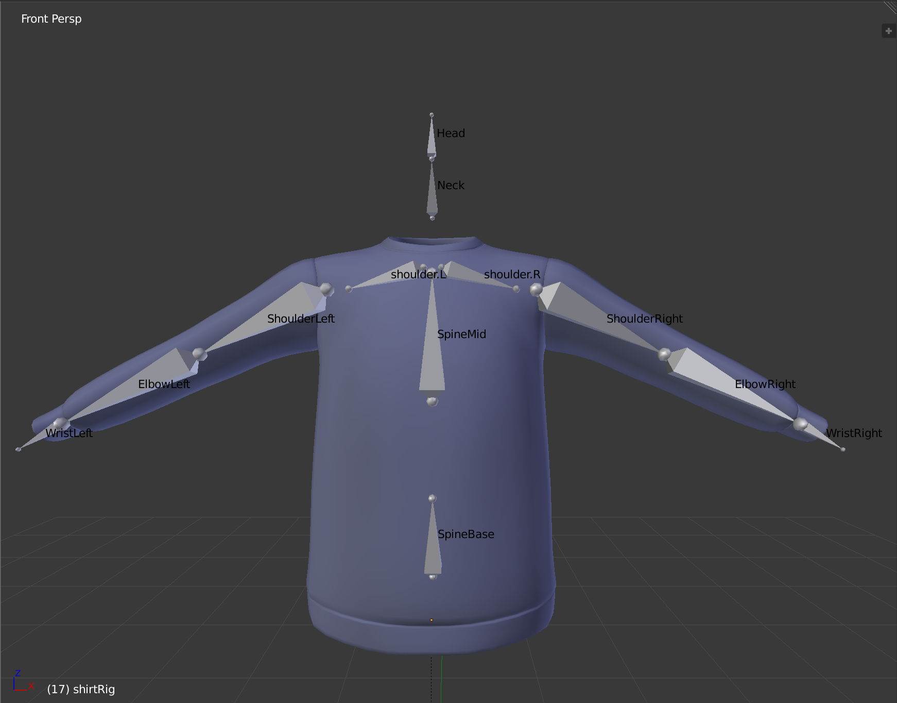
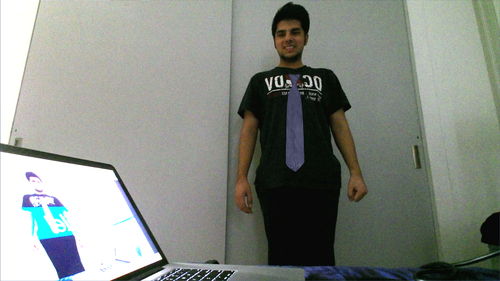
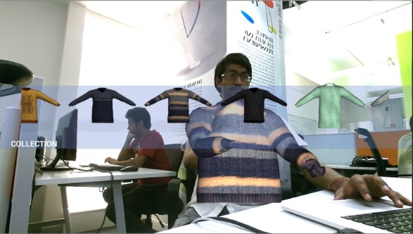
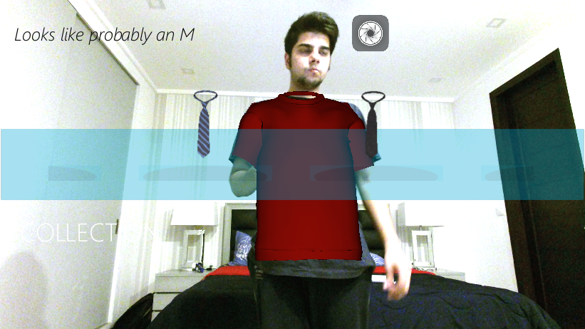

The Virtual Trial Room is a simulation of a trial room experience. The idea is to give the user the opportunity to experience clothing in a lifelike virtual setup. Real-time cloth simulation and an intuitive gesture based interface - “grab, scroll and release” - gave our customers swifter access to a wider collection of apparels.
The 3D models of clothing generated in 3DX max/Blender were rigged with bone structures which were then superimposed on the bone structure identified by the kinect feed.
The app could also click photographs of the customer while interacting with the apparel, to share later with friends and family. It also made size recommendations by studying the ratios between shoulder length, waist, and length of the spine.
 






